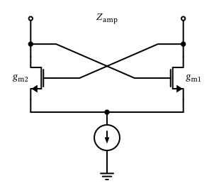

差分负阻如何启动 LC
差分端口上的电压扰动经跨耦反馈形成反方向的小信号电流。这个负电导补偿 Tank 的损耗。扰动增长后，晶体管增益和波形进入非线性区，振幅最终在净能量平衡点附近稳定。

并联损耗电阻必须按同一差分端口折算。


同一电路，改变串联损耗
预跑 SKY130 TT、27 °C 数据。固定 L=1 nH、C=810 fF。图中的 Rs 是电感串联损耗，公式的 Rp 是并联等效量。
差分端口上的电压扰动经跨耦反馈形成反方向的小信号电流。这个负电导补偿 Tank 的损耗。扰动增长后，晶体管增益和波形进入非线性区，振幅最终在净能量平衡点附近稳定。
并联损耗电阻必须按同一差分端口折算。

预跑 SKY130 TT、27 °C 数据。固定 L=1 nH、C=810 fF。图中的 Rs 是电感串联损耗，公式的 Rp 是并联等效量。